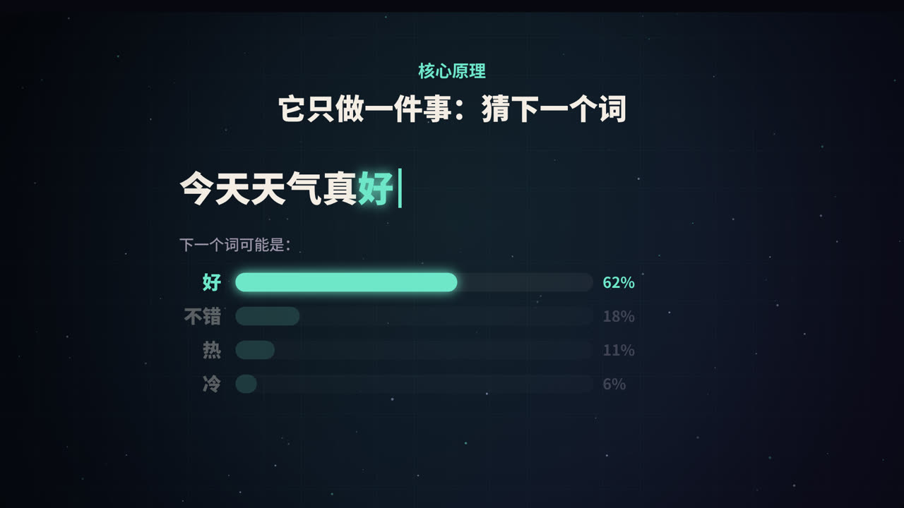
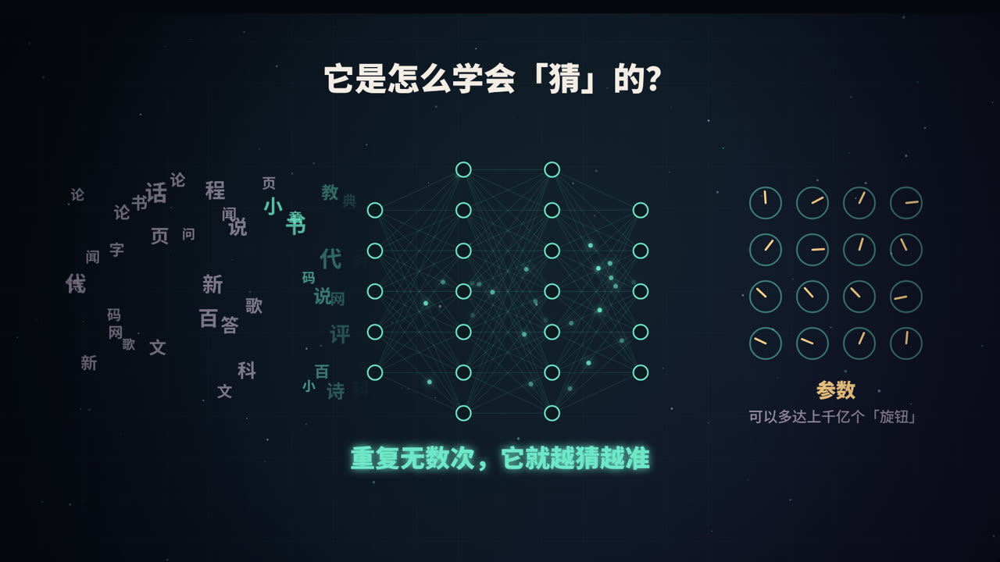
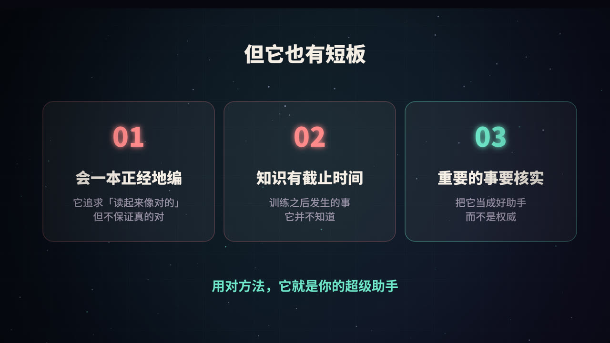
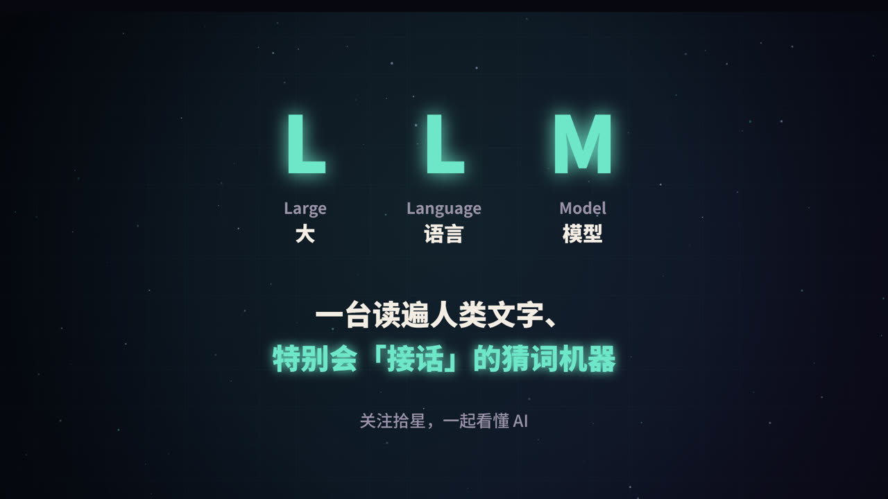

LLM 是什么
LLM 是 Large Language Model 的缩写，中文叫大语言模型。拆开看：
- Large（大）：参数量巨大，常见的有几十亿到上千亿个参数；训练用的文字也极多，往往是万亿级别的 token。
- Language（语言）：它处理的对象是语言，包括自然语言，也包括代码。
- Model（模型）：本质是一个数学函数，输入一段文字，输出对下一段文字的预测。
你平时用的 ChatGPT、Claude、DeepSeek、豆包等，是「产品」；它们背后驱动对话的，就是 LLM。产品会在模型之外再加上界面、记忆、联网搜索、工具调用等功能。
核心原理：它只做一件事——猜下一个词

一个最简单的例子
输入「今天天气真」，模型会对「下一个词」给出一个概率分布，比如：
| 候选 | 概率（示意） |
|---|---|
| 好 | 62% |
| 不错 | 18% |
| 热 | 11% |
| 冷 | 6% |
它从中选出一个词，比如「好」，拼到句子后面，得到「今天天气真好」。然后把整句话再输入一遍，继续猜下一个词。如此循环，一个词接一个词地「写」出整段回答。这种方式叫自回归生成。
为什么同一个问题，每次回答不一样
因为模型并不总是选概率最高的那个词，而是按概率「抽签」。控制抽签方式的常见参数有：
- 温度（temperature）：越低越保守，倾向于选高概率词；越高越发散，更有创意，也更容易跑偏。
- Top-p / Top-k：只在概率最高的一部分候选里抽签，过滤掉离谱的选项。
写代码、做数学时一般用低温度；写故事、头脑风暴时可以适当调高。
准确说，它猜的是 token
模型处理的最小单位不是「字」或「词」，而是 token。一个 token 可能是一个完整的英文单词、一个词根、一个汉字，也可能是半个汉字的编码片段，取决于模型使用的分词器（tokenizer）。
这有几个实际影响：
- 模型的「上下文长度」和 API 的计费，都是按 token 算的；
- 同样意思的一段话，中文和英文消耗的 token 数可能不同；
- 让模型「数一个单词里有几个字母」这类任务，它有时会出错，因为它看到的是 token，而不是一个个字母。
它是怎么学会「猜」的

第一阶段：预训练
模型最开始是一堆随机的数字（参数），什么也不会。训练时，把海量文本切成片段，遮住每个位置的下一个 token，让模型去猜：
- 模型给出预测的概率分布；
- 和真实答案对比，算出「错了多少」（这个数叫损失）；
- 用反向传播算出每个参数该往哪个方向调、调多少；
- 按这个方向把所有参数微调一点点。
这样的过程要重复成千上万亿次。训练数据包括书籍、网页、百科、论文、代码等。因为答案就藏在文本本身里，不需要人工标注，所以这种方法叫自监督学习。
为了把下一个词猜准，模型必须在内部学会语法、常识、事实，甚至一定程度的推理能力。这就是为什么「只是猜下一个词」的模型，却能表现出相当的「理解」能力。
第二阶段：让它变成「助手」
只做过预训练的模型更像一个「续写机器」：你问它一个问题，它可能会接着写出更多问题，而不是回答。要把它变成好用的助手，还需要：
- 指令微调（SFT）：用大量「问题 → 高质量回答」的示例，教它按照指令回应；
- 基于人类反馈的强化学习（RLHF） 及类似方法：让人类（或 AI）对多个回答打分排序，训练模型更倾向于给出有帮助、诚实、无害的回答。
参数是什么
参数就是模型内部那些可以调整的数字，视频里把它比作「旋钮」。模型学到的所有知识和能力，都以某种分布式的方式存储在这些数字里。参数越多，模型的容量通常越大，但训练和运行的成本也越高。
关键结构：Transformer 与注意力机制
「它」指的是谁
看这句话：「小猫追着球跑，因为它饿了。」人很容易知道「它」指的是小猫，因为球不会饿。模型要做到这一点，就必须在处理「它」的时候，回头看看前文里每个词，判断谁和它最相关。
这就是注意力机制（attention）做的事。在处理每个 token 时，模型会计算它与上下文中其他所有 token 的相关程度（注意力权重），然后按权重把这些信息汇总起来。
稍微技术一点的解释
在自注意力中，每个 token 会生成三个向量：
- Query（查询）：我在找什么信息？
- Key（键）：我能提供什么信息？
- Value（值）：我实际携带的信息内容。
用一个 token 的 Query 去和所有 token 的 Key 做比较，得到相关度分数，再归一化成权重，最后用这些权重对 Value 做加权求和。这样，「它」就能从「小猫」那里拿到最多的信息。
真实的模型会同时运行很多组这样的计算（多头注意力），每一组可以关注不同的关系，比如指代关系、语法关系、主题关系等。再把这样的层堆叠几十层，就构成了模型的主体。
Transformer 的由来
这种以注意力为核心的结构叫 Transformer，出自 2017 年谷歌研究人员发表的论文《Attention Is All You Need》。GPT 的全称是 Generative Pre-trained Transformer，最后那个 T 指的就是它。
相比之前的循环神经网络（RNN），Transformer 可以并行处理整段文字，非常适合在大量 GPU 上训练，这也是大模型得以「做大」的关键原因之一。
上下文窗口
模型一次能「看到」的 token 数量是有限的，这叫上下文窗口。超过窗口的内容，模型就看不到了。这也是为什么很长的对话里，模型有时会「忘记」最开始说过的话。
它的短板

1. 会一本正经地胡说（幻觉）
模型的训练目标是生成「看起来合理」的文字，而不是「保证正确」的文字。当它不知道答案时，并不一定会说「我不知道」，而可能编出一个听起来很像真的回答，比如不存在的论文、错误的数据。这种现象叫幻觉（hallucination）。
2. 知识有截止时间
模型的知识来自训练数据，训练数据有截止日期。在那之后发生的事，模型原本并不知道，除非产品给它接上了搜索等工具。
3. 不擅长精确计算和「数数」
因为是按 token 生成文字，模型在大数乘法、精确计数这类任务上容易出错。很多产品会让模型调用计算器或代码执行工具来弥补。
怎么缓解
- 接入检索（RAG）：先查资料，再基于资料回答（详见本系列《RAG 是什么》）；
- 接入工具：搜索、计算器、代码执行；
- 要求给出处：让它标明信息来源，方便核对；
- 人来把关：重要的事，把它当作助手而不是权威。
怎么用好 LLM
- 把背景讲清楚：你是谁、要做什么、给谁看、有什么限制。
- 给例子：想要什么格式，就给它一个样例。
- 让它分步思考：复杂问题让它先列出思路再作答。
- 追问和修改：第一次结果不满意，指出具体哪里不好，让它改。
- 核实关键信息：数字、引用、法律和医疗相关内容，务必再确认。
名词速查
| 名词 | 一句话解释 |
|---|---|
| Token | 模型处理文字的最小单位 |
| 参数 | 模型内部可调整的数字，存储学到的知识 |
| 预训练 | 在海量文本上练习「猜下一个词」 |
| 微调 / RLHF | 让模型学会按指令回答、符合人类偏好 |
| Transformer | 以注意力机制为核心的神经网络结构 |
| 注意力 | 计算每个 token 该关注上下文中的哪些部分 |
| 上下文窗口 | 模型一次能看到的最大 token 数 |
| 温度 | 控制输出随机程度的参数 |
| 幻觉 | 模型生成看似合理但实际错误的内容 |
总结

一句话概括：LLM 是一个通过阅读海量文字、学会「猜下一个词」的模型。 它借助 Transformer 和注意力机制理解上下文，通过预训练获得知识，通过微调学会做一个助手。它很强大，但也会编造、有知识截止时间。了解它的原理，才能更好地用它。
参考资料
- Vaswani, A., et al. (2017). Attention Is All You Need. NeurIPS.
- Radford, A., et al. (2018). Improving Language Understanding by Generative Pre-Training. OpenAI.
- Brown, T., et al. (2020). Language Models are Few-Shot Learners. NeurIPS.
- Ouyang, L., et al. (2022). Training language models to follow instructions with human feedback. NeurIPS.